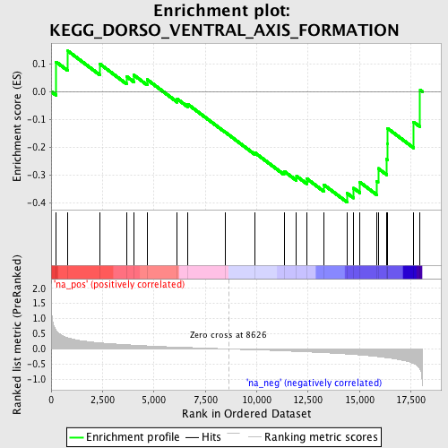
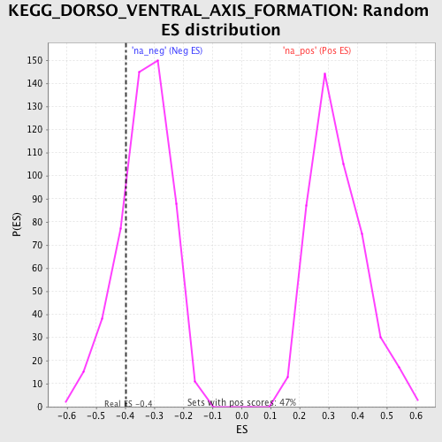

| | | Dataset | GSEA_Acromegaly_prerank_FC |
| Phenotype | NoPhenotypeAvailable |
| Upregulated in class | na_neg |
| GeneSet | KEGG_DORSO_VENTRAL_AXIS_FORMATION |
| Enrichment Score (ES) | -0.39760685 |
| Normalized Enrichment Score (NES) | -1.1941111 |
| Nominal p-value | 0.22623575 |
| FDR q-value | 0.31985974 |
| FWER p-Value | 1.0 |
Table: GSEA Results Summary

Fig 1: Enrichment plot: KEGG_DORSO_VENTRAL_AXIS_FORMATION
Profile of the Running ES Score & Positions of GeneSet Members on the Rank Ordered List
| PROBE | GENE SYMBOL | GENE_TITLE | RANK IN GENE LIST | RANK METRIC SCORE | RUNNING ES | CORE ENRICHMENT | | 1 | PIWIL2 | | | 241 | 0.614 | 0.1063 | No |
| 2 | PIWIL1 | | | 814 | 0.365 | 0.1457 | No |
| 3 | SOS1 | | | 2363 | 0.203 | 0.0994 | No |
| 4 | NOTCH2 | | | 3677 | 0.139 | 0.0536 | No |
| 5 | SPIRE2 | | | 4017 | 0.126 | 0.0594 | No |
| 6 | FMN2 | | | 4672 | 0.101 | 0.0429 | No |
| 7 | SOS2 | | | 6135 | 0.059 | -0.0267 | No |
| 8 | ETS1 | | | 6644 | 0.049 | -0.0454 | No |
| 9 | EGFR | | | 8456 | 0.004 | -0.1450 | No |
| 10 | MAPK1 | | | 9930 | -0.032 | -0.2205 | No |
| 11 | PIWIL3 | | | 11328 | -0.064 | -0.2854 | No |
| 12 | GRB2 | | | 11936 | -0.082 | -0.3032 | No |
| 13 | ETV7 | | | 12433 | -0.095 | -0.3121 | No |
| 14 | KRAS | | | 13256 | -0.123 | -0.3338 | No |
| 15 | NOTCH1 | | | 14407 | -0.168 | -0.3649 | Yes |
| 16 | MAP2K1 | | | 14711 | -0.182 | -0.3462 | Yes |
| 17 | PIWIL4 | | | 15021 | -0.197 | -0.3249 | Yes |
| 18 | MAPK3 | | | 15840 | -0.250 | -0.3216 | Yes |
| 19 | SPIRE1 | | | 15904 | -0.254 | -0.2756 | Yes |
| 20 | ETV6 | | | 16317 | -0.287 | -0.2425 | Yes |
| 21 | ETS2 | | | 16361 | -0.290 | -0.1883 | Yes |
| 22 | NOTCH4 | | | 16368 | -0.291 | -0.1320 | Yes |
| 23 | NOTCH3 | | | 17632 | -0.476 | -0.1093 | Yes |
| 24 | CPEB1 | | | 17951 | -0.680 | 0.0055 | Yes |
Table: GSEA details [plain text format]

Fig 2: KEGG_DORSO_VENTRAL_AXIS_FORMATION: Random ES distribution
Gene set null distribution of ES for KEGG_DORSO_VENTRAL_AXIS_FORMATION